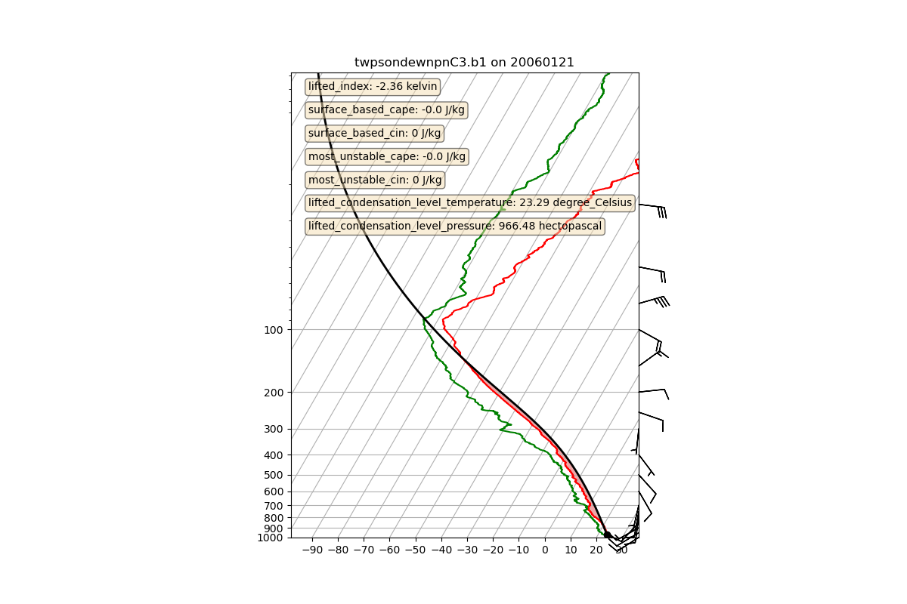

Note
Go to the end to download the full example code
Skew-T plot of a sounding¶
This example shows how to make a Skew-T plot from a sounding and calculate stability indicies.
Author: Maxwell Grover
/home/runner/work/ACT/ACT/act/retrievals/sonde.py:168: UserWarning: Duplicate pressure(s) [5.800000190734863 5.900000095367432 6.0 6.099999904632568 6.199999809265137 6.300000190734863 6.400000095367432 6.5 6.599999904632568 6.699999809265137 6.800000190734863 6.900000095367432 7.0 7.099999904632568 7.199999809265137 7.300000190734863 7.400000095367432 7.5 7.599999904632568 7.699999809265137 7.800000190734863 7.900000095367432 8.0 8.100000381469727 8.199999809265137 8.300000190734863 8.399999618530273 8.5 8.600000381469727 8.699999809265137 8.800000190734863 8.899999618530273 9.0 9.100000381469727 9.199999809265137 9.300000190734863 9.399999618530273 9.5 9.600000381469727 9.699999809265137 9.800000190734863 9.899999618530273 10.0 10.100000381469727 10.199999809265137 10.300000190734863 10.399999618530273 10.5 10.600000381469727 10.699999809265137 10.800000190734863 10.899999618530273 11.0 11.100000381469727 11.199999809265137 11.300000190734863 11.399999618530273 11.5 11.600000381469727 11.699999809265137 11.800000190734863 11.899999618530273 12.0 12.100000381469727 12.199999809265137 12.300000190734863 12.399999618530273 12.5 12.600000381469727 12.699999809265137 12.800000190734863 12.899999618530273 13.0 13.100000381469727 13.199999809265137 13.300000190734863 13.399999618530273 13.5 13.600000381469727 13.699999809265137 13.800000190734863 13.899999618530273 14.0 14.100000381469727 14.199999809265137 14.300000190734863 14.399999618530273 14.5 14.600000381469727 14.699999809265137 14.800000190734863 14.899999618530273 15.0 15.100000381469727 15.199999809265137 15.300000190734863 15.399999618530273 15.5 15.600000381469727 15.699999809265137 15.800000190734863 15.899999618530273 16.0 16.100000381469727 16.200000762939453 16.299999237060547 16.399999618530273 16.5 16.600000381469727 16.700000762939453 16.799999237060547 16.899999618530273 17.0 17.100000381469727 17.200000762939453 17.299999237060547 17.399999618530273 17.5 17.600000381469727 17.700000762939453 17.799999237060547 17.899999618530273 18.0 18.100000381469727 18.200000762939453 18.299999237060547 18.399999618530273 18.5 18.600000381469727 18.700000762939453 18.799999237060547 18.899999618530273 19.0 19.100000381469727 19.200000762939453 19.299999237060547 19.399999618530273 19.5 19.600000381469727 19.700000762939453 19.799999237060547 19.899999618530273 20.0 20.100000381469727 20.200000762939453 20.299999237060547 20.399999618530273 20.5 20.600000381469727 20.700000762939453 20.799999237060547 20.899999618530273 21.0 21.100000381469727 21.200000762939453 21.299999237060547 21.399999618530273 21.5 21.600000381469727 21.700000762939453 21.799999237060547 21.899999618530273 22.0 22.100000381469727 22.200000762939453 22.299999237060547 22.399999618530273 22.5 22.600000381469727 22.700000762939453 22.799999237060547 22.899999618530273 23.0 23.100000381469727 23.200000762939453 23.299999237060547 23.399999618530273 23.5 23.600000381469727 23.700000762939453 23.799999237060547 23.899999618530273 24.0 24.100000381469727 24.200000762939453 24.299999237060547 24.399999618530273 24.5 24.600000381469727 24.700000762939453 24.799999237060547 24.899999618530273 25.0 25.100000381469727 25.200000762939453 25.299999237060547 25.399999618530273 25.5 25.600000381469727 25.700000762939453 25.799999237060547 25.899999618530273 26.0 26.100000381469727 26.200000762939453 26.299999237060547 26.399999618530273 26.5 26.600000381469727 26.700000762939453 26.799999237060547 26.899999618530273 27.0 27.100000381469727 27.200000762939453 27.299999237060547 27.399999618530273 27.5 27.600000381469727 27.700000762939453 27.799999237060547 27.899999618530273 28.0 28.100000381469727 28.200000762939453 28.299999237060547 28.399999618530273 28.5 28.600000381469727 28.700000762939453 28.799999237060547 28.899999618530273 29.0 29.100000381469727 29.200000762939453 29.299999237060547 29.399999618530273 29.5 29.600000381469727 29.700000762939453 29.799999237060547 29.899999618530273 30.0 30.100000381469727 30.200000762939453 30.299999237060547 30.399999618530273 30.5 30.600000381469727 30.799999237060547 30.899999618530273 31.0 31.200000762939453 31.299999237060547 31.399999618530273 31.600000381469727 31.700000762939453 31.899999618530273 32.0 32.20000076293945 32.29999923706055 32.5 32.599998474121094 32.79999923706055 32.900001525878906 33.0 33.099998474121094 33.29999923706055 33.400001525878906 33.5 33.599998474121094 33.70000076293945 33.900001525878906 34.0 34.099998474121094 34.20000076293945 34.29999923706055 34.400001525878906 34.5 34.599998474121094 34.70000076293945 34.79999923706055 34.900001525878906 35.0 35.099998474121094 35.20000076293945 35.29999923706055 35.400001525878906 35.5 35.599998474121094 35.70000076293945 35.79999923706055 35.900001525878906 36.0 36.099998474121094 36.29999923706055 36.400001525878906 36.5 36.599998474121094 36.70000076293945 36.79999923706055 36.900001525878906 37.0 37.099998474121094 37.20000076293945 37.29999923706055 37.5 37.599998474121094 37.70000076293945 37.79999923706055 37.900001525878906 38.099998474121094 38.20000076293945 38.29999923706055 38.400001525878906 38.599998474121094 38.70000076293945 38.79999923706055 39.0 39.099998474121094 39.29999923706055 39.400001525878906 39.599998474121094 39.70000076293945 39.900001525878906 40.099998474121094 40.20000076293945 40.400001525878906 40.599998474121094 40.79999923706055 41.0 41.20000076293945 41.400001525878906 41.599998474121094 41.79999923706055 42.099998474121094 42.29999923706055 42.5 42.79999923706055 43.099998474121094 43.29999923706055 43.5 43.70000076293945 44.0 44.20000076293945 44.5 44.70000076293945 45.0 45.20000076293945 45.5 45.599998474121094 45.79999923706055 46.0 46.20000076293945 46.29999923706055 46.5 46.599998474121094 46.79999923706055 47.0 47.099998474121094 47.29999923706055 47.5 47.599998474121094 47.79999923706055 48.0 48.20000076293945 48.400001525878906 48.599998474121094 48.79999923706055 49.0 49.29999923706055 49.5 49.79999923706055 50.099998474121094 50.5 50.900001525878906 51.400001525878906 52.099998474121094 53.099998474121094 54.099998474121094 55.099998474121094 55.79999923706055 56.29999923706055 56.79999923706055 57.20000076293945 57.599998474121094 58.0 58.400001525878906 58.79999923706055 59.099998474121094 59.5 59.900001525878906 60.5 61.099998474121094 61.599998474121094 62.599998474121094] hPa provided. Output profile includes duplicate temperatures as a result.
t_profile = mpcalc.parcel_profile(p_sorted, t_sorted[0], td_sorted[0])
/home/runner/work/ACT/ACT/act/retrievals/sonde.py:175: UserWarning: Duplicate pressure(s) [5.800000190734863 5.900000095367432 6.0 6.099999904632568 6.199999809265137 6.300000190734863 6.400000095367432 6.5 6.599999904632568 6.699999809265137 6.800000190734863 6.900000095367432 7.0 7.099999904632568 7.199999809265137 7.300000190734863 7.400000095367432 7.5 7.599999904632568 7.699999809265137 7.800000190734863 7.900000095367432 8.0 8.100000381469727 8.199999809265137 8.300000190734863 8.399999618530273 8.5 8.600000381469727 8.699999809265137 8.800000190734863 8.899999618530273 9.0 9.100000381469727 9.199999809265137 9.300000190734863 9.399999618530273 9.5 9.600000381469727 9.699999809265137 9.800000190734863 9.899999618530273 10.0 10.100000381469727 10.199999809265137 10.300000190734863 10.399999618530273 10.5 10.600000381469727 10.699999809265137 10.800000190734863 10.899999618530273 11.0 11.100000381469727 11.199999809265137 11.300000190734863 11.399999618530273 11.5 11.600000381469727 11.699999809265137 11.800000190734863 11.899999618530273 12.0 12.100000381469727 12.199999809265137 12.300000190734863 12.399999618530273 12.5 12.600000381469727 12.699999809265137 12.800000190734863 12.899999618530273 13.0 13.100000381469727 13.199999809265137 13.300000190734863 13.399999618530273 13.5 13.600000381469727 13.699999809265137 13.800000190734863 13.899999618530273 14.0 14.100000381469727 14.199999809265137 14.300000190734863 14.399999618530273 14.5 14.600000381469727 14.699999809265137 14.800000190734863 14.899999618530273 15.0 15.100000381469727 15.199999809265137 15.300000190734863 15.399999618530273 15.5 15.600000381469727 15.699999809265137 15.800000190734863 15.899999618530273 16.0 16.100000381469727 16.200000762939453 16.299999237060547 16.399999618530273 16.5 16.600000381469727 16.700000762939453 16.799999237060547 16.899999618530273 17.0 17.100000381469727 17.200000762939453 17.299999237060547 17.399999618530273 17.5 17.600000381469727 17.700000762939453 17.799999237060547 17.899999618530273 18.0 18.100000381469727 18.200000762939453 18.299999237060547 18.399999618530273 18.5 18.600000381469727 18.700000762939453 18.799999237060547 18.899999618530273 19.0 19.100000381469727 19.200000762939453 19.299999237060547 19.399999618530273 19.5 19.600000381469727 19.700000762939453 19.799999237060547 19.899999618530273 20.0 20.100000381469727 20.200000762939453 20.299999237060547 20.399999618530273 20.5 20.600000381469727 20.700000762939453 20.799999237060547 20.899999618530273 21.0 21.100000381469727 21.200000762939453 21.299999237060547 21.399999618530273 21.5 21.600000381469727 21.700000762939453 21.799999237060547 21.899999618530273 22.0 22.100000381469727 22.200000762939453 22.299999237060547 22.399999618530273 22.5 22.600000381469727 22.700000762939453 22.799999237060547 22.899999618530273 23.0 23.100000381469727 23.200000762939453 23.299999237060547 23.399999618530273 23.5 23.600000381469727 23.700000762939453 23.799999237060547 23.899999618530273 24.0 24.100000381469727 24.200000762939453 24.299999237060547 24.399999618530273 24.5 24.600000381469727 24.700000762939453 24.799999237060547 24.899999618530273 25.0 25.100000381469727 25.200000762939453 25.299999237060547 25.399999618530273 25.5 25.600000381469727 25.700000762939453 25.799999237060547 25.899999618530273 26.0 26.100000381469727 26.200000762939453 26.299999237060547 26.399999618530273 26.5 26.600000381469727 26.700000762939453 26.799999237060547 26.899999618530273 27.0 27.100000381469727 27.200000762939453 27.299999237060547 27.399999618530273 27.5 27.600000381469727 27.700000762939453 27.799999237060547 27.899999618530273 28.0 28.100000381469727 28.200000762939453 28.299999237060547 28.399999618530273 28.5 28.600000381469727 28.700000762939453 28.799999237060547 28.899999618530273 29.0 29.100000381469727 29.200000762939453 29.299999237060547 29.399999618530273 29.5 29.600000381469727 29.700000762939453 29.799999237060547 29.899999618530273 30.0 30.100000381469727 30.200000762939453 30.299999237060547 30.399999618530273 30.5 30.600000381469727 30.799999237060547 30.899999618530273 31.0 31.200000762939453 31.299999237060547 31.399999618530273 31.600000381469727 31.700000762939453 31.899999618530273 32.0 32.20000076293945 32.29999923706055 32.5 32.599998474121094 32.79999923706055 32.900001525878906 33.0 33.099998474121094 33.29999923706055 33.400001525878906 33.5 33.599998474121094 33.70000076293945 33.900001525878906 34.0 34.099998474121094 34.20000076293945 34.29999923706055 34.400001525878906 34.5 34.599998474121094 34.70000076293945 34.79999923706055 34.900001525878906 35.0 35.099998474121094 35.20000076293945 35.29999923706055 35.400001525878906 35.5 35.599998474121094 35.70000076293945 35.79999923706055 35.900001525878906 36.0 36.099998474121094 36.29999923706055 36.400001525878906 36.5 36.599998474121094 36.70000076293945 36.79999923706055 36.900001525878906 37.0 37.099998474121094 37.20000076293945 37.29999923706055 37.5 37.599998474121094 37.70000076293945 37.79999923706055 37.900001525878906 38.099998474121094 38.20000076293945 38.29999923706055 38.400001525878906 38.599998474121094 38.70000076293945 38.79999923706055 39.0 39.099998474121094 39.29999923706055 39.400001525878906 39.599998474121094 39.70000076293945 39.900001525878906 40.099998474121094 40.20000076293945 40.400001525878906 40.599998474121094 40.79999923706055 41.0 41.20000076293945 41.400001525878906 41.599998474121094 41.79999923706055 42.099998474121094 42.29999923706055 42.5 42.79999923706055 43.099998474121094 43.29999923706055 43.5 43.70000076293945 44.0 44.20000076293945 44.5 44.70000076293945 45.0 45.20000076293945 45.5 45.599998474121094 45.79999923706055 46.0 46.20000076293945 46.29999923706055 46.5 46.599998474121094 46.79999923706055 47.0 47.099998474121094 47.29999923706055 47.5 47.599998474121094 47.79999923706055 48.0 48.20000076293945 48.400001525878906 48.599998474121094 48.79999923706055 49.0 49.29999923706055 49.5 49.79999923706055 50.099998474121094 50.5 50.900001525878906 51.400001525878906 52.099998474121094 53.099998474121094 54.099998474121094 55.099998474121094 55.79999923706055 56.29999923706055 56.79999923706055 57.20000076293945 57.599998474121094 58.0 58.400001525878906 58.79999923706055 59.099998474121094 59.5 59.900001525878906 60.5 61.099998474121094 61.599998474121094 62.599998474121094] hPa provided. Output profile includes duplicate temperatures as a result.
sbcape, sbcin = mpcalc.surface_based_cape_cin(p_sorted, t_sorted, td_sorted)
/home/runner/work/ACT/ACT/act/retrievals/sonde.py:179: UserWarning: Interpolation point out of data bounds encountered
lfc = mpcalc.lfc(p_sorted[0], t_sorted[0], td_sorted[0])
/home/runner/work/ACT/ACT/act/retrievals/sonde.py:183: UserWarning: Duplicate pressure(s) [5.800000190734863 5.900000095367432 6.0 6.099999904632568 6.199999809265137 6.300000190734863 6.400000095367432 6.5 6.599999904632568 6.699999809265137 6.800000190734863 6.900000095367432 7.0 7.099999904632568 7.199999809265137 7.300000190734863 7.400000095367432 7.5 7.599999904632568 7.699999809265137 7.800000190734863 7.900000095367432 8.0 8.100000381469727 8.199999809265137 8.300000190734863 8.399999618530273 8.5 8.600000381469727 8.699999809265137 8.800000190734863 8.899999618530273 9.0 9.100000381469727 9.199999809265137 9.300000190734863 9.399999618530273 9.5 9.600000381469727 9.699999809265137 9.800000190734863 9.899999618530273 10.0 10.100000381469727 10.199999809265137 10.300000190734863 10.399999618530273 10.5 10.600000381469727 10.699999809265137 10.800000190734863 10.899999618530273 11.0 11.100000381469727 11.199999809265137 11.300000190734863 11.399999618530273 11.5 11.600000381469727 11.699999809265137 11.800000190734863 11.899999618530273 12.0 12.100000381469727 12.199999809265137 12.300000190734863 12.399999618530273 12.5 12.600000381469727 12.699999809265137 12.800000190734863 12.899999618530273 13.0 13.100000381469727 13.199999809265137 13.300000190734863 13.399999618530273 13.5 13.600000381469727 13.699999809265137 13.800000190734863 13.899999618530273 14.0 14.100000381469727 14.199999809265137 14.300000190734863 14.399999618530273 14.5 14.600000381469727 14.699999809265137 14.800000190734863 14.899999618530273 15.0 15.100000381469727 15.199999809265137 15.300000190734863 15.399999618530273 15.5 15.600000381469727 15.699999809265137 15.800000190734863 15.899999618530273 16.0 16.100000381469727 16.200000762939453 16.299999237060547 16.399999618530273 16.5 16.600000381469727 16.700000762939453 16.799999237060547 16.899999618530273 17.0 17.100000381469727 17.200000762939453 17.299999237060547 17.399999618530273 17.5 17.600000381469727 17.700000762939453 17.799999237060547 17.899999618530273 18.0 18.100000381469727 18.200000762939453 18.299999237060547 18.399999618530273 18.5 18.600000381469727 18.700000762939453 18.799999237060547 18.899999618530273 19.0 19.100000381469727 19.200000762939453 19.299999237060547 19.399999618530273 19.5 19.600000381469727 19.700000762939453 19.799999237060547 19.899999618530273 20.0 20.100000381469727 20.200000762939453 20.299999237060547 20.399999618530273 20.5 20.600000381469727 20.700000762939453 20.799999237060547 20.899999618530273 21.0 21.100000381469727 21.200000762939453 21.299999237060547 21.399999618530273 21.5 21.600000381469727 21.700000762939453 21.799999237060547 21.899999618530273 22.0 22.100000381469727 22.200000762939453 22.299999237060547 22.399999618530273 22.5 22.600000381469727 22.700000762939453 22.799999237060547 22.899999618530273 23.0 23.100000381469727 23.200000762939453 23.299999237060547 23.399999618530273 23.5 23.600000381469727 23.700000762939453 23.799999237060547 23.899999618530273 24.0 24.100000381469727 24.200000762939453 24.299999237060547 24.399999618530273 24.5 24.600000381469727 24.700000762939453 24.799999237060547 24.899999618530273 25.0 25.100000381469727 25.200000762939453 25.299999237060547 25.399999618530273 25.5 25.600000381469727 25.700000762939453 25.799999237060547 25.899999618530273 26.0 26.100000381469727 26.200000762939453 26.299999237060547 26.399999618530273 26.5 26.600000381469727 26.700000762939453 26.799999237060547 26.899999618530273 27.0 27.100000381469727 27.200000762939453 27.299999237060547 27.399999618530273 27.5 27.600000381469727 27.700000762939453 27.799999237060547 27.899999618530273 28.0 28.100000381469727 28.200000762939453 28.299999237060547 28.399999618530273 28.5 28.600000381469727 28.700000762939453 28.799999237060547 28.899999618530273 29.0 29.100000381469727 29.200000762939453 29.299999237060547 29.399999618530273 29.5 29.600000381469727 29.700000762939453 29.799999237060547 29.899999618530273 30.0 30.100000381469727 30.200000762939453 30.299999237060547 30.399999618530273 30.5 30.600000381469727 30.799999237060547 30.899999618530273 31.0 31.200000762939453 31.299999237060547 31.399999618530273 31.600000381469727 31.700000762939453 31.899999618530273 32.0 32.20000076293945 32.29999923706055 32.5 32.599998474121094 32.79999923706055 32.900001525878906 33.0 33.099998474121094 33.29999923706055 33.400001525878906 33.5 33.599998474121094 33.70000076293945 33.900001525878906 34.0 34.099998474121094 34.20000076293945 34.29999923706055 34.400001525878906 34.5 34.599998474121094 34.70000076293945 34.79999923706055 34.900001525878906 35.0 35.099998474121094 35.20000076293945 35.29999923706055 35.400001525878906 35.5 35.599998474121094 35.70000076293945 35.79999923706055 35.900001525878906 36.0 36.099998474121094 36.29999923706055 36.400001525878906 36.5 36.599998474121094 36.70000076293945 36.79999923706055 36.900001525878906 37.0 37.099998474121094 37.20000076293945 37.29999923706055 37.5 37.599998474121094 37.70000076293945 37.79999923706055 37.900001525878906 38.099998474121094 38.20000076293945 38.29999923706055 38.400001525878906 38.599998474121094 38.70000076293945 38.79999923706055 39.0 39.099998474121094 39.29999923706055 39.400001525878906 39.599998474121094 39.70000076293945 39.900001525878906 40.099998474121094 40.20000076293945 40.400001525878906 40.599998474121094 40.79999923706055 41.0 41.20000076293945 41.400001525878906 41.599998474121094 41.79999923706055 42.099998474121094 42.29999923706055 42.5 42.79999923706055 43.099998474121094 43.29999923706055 43.5 43.70000076293945 44.0 44.20000076293945 44.5 44.70000076293945 45.0 45.20000076293945 45.5 45.599998474121094 45.79999923706055 46.0 46.20000076293945 46.29999923706055 46.5 46.599998474121094 46.79999923706055 47.0 47.099998474121094 47.29999923706055 47.5 47.599998474121094 47.79999923706055 48.0 48.20000076293945 48.400001525878906 48.599998474121094 48.79999923706055 49.0 49.29999923706055 49.5 49.79999923706055 50.099998474121094 50.5 50.900001525878906 51.400001525878906 52.099998474121094 53.099998474121094 54.099998474121094 55.099998474121094 55.79999923706055 56.29999923706055 56.79999923706055 57.20000076293945 57.599998474121094 58.0 58.400001525878906 58.79999923706055 59.099998474121094 59.5 59.900001525878906 60.5 61.099998474121094 61.599998474121094 62.599998474121094] hPa provided. Output profile includes duplicate temperatures as a result.
mucape, mucin = mpcalc.most_unstable_cape_cin(p_sorted, t_sorted, td_sorted)
/home/runner/work/ACT/ACT/act/plotting/skewtdisplay.py:419: UserWarning: Duplicate pressure(s) [5.800000190734863 5.900000095367432 6.0 6.099999904632568 6.199999809265137 6.300000190734863 6.400000095367432 6.5 6.599999904632568 6.699999809265137 6.800000190734863 6.900000095367432 7.0 7.099999904632568 7.199999809265137 7.300000190734863 7.400000095367432 7.5 7.599999904632568 7.699999809265137 7.800000190734863 7.900000095367432 8.0 8.100000381469727 8.199999809265137 8.300000190734863 8.399999618530273 8.5 8.600000381469727 8.699999809265137 8.800000190734863 8.899999618530273 9.0 9.100000381469727 9.199999809265137 9.300000190734863 9.399999618530273 9.5 9.600000381469727 9.699999809265137 9.800000190734863 9.899999618530273 10.0 10.100000381469727 10.199999809265137 10.300000190734863 10.399999618530273 10.5 10.600000381469727 10.699999809265137 10.800000190734863 10.899999618530273 11.0 11.100000381469727 11.199999809265137 11.300000190734863 11.399999618530273 11.5 11.600000381469727 11.699999809265137 11.800000190734863 11.899999618530273 12.0 12.100000381469727 12.199999809265137 12.300000190734863 12.399999618530273 12.5 12.600000381469727 12.699999809265137 12.800000190734863 12.899999618530273 13.0 13.100000381469727 13.199999809265137 13.300000190734863 13.399999618530273 13.5 13.600000381469727 13.699999809265137 13.800000190734863 13.899999618530273 14.0 14.100000381469727 14.199999809265137 14.300000190734863 14.399999618530273 14.5 14.600000381469727 14.699999809265137 14.800000190734863 14.899999618530273 15.0 15.100000381469727 15.199999809265137 15.300000190734863 15.399999618530273 15.5 15.600000381469727 15.699999809265137 15.800000190734863 15.899999618530273 16.0 16.100000381469727 16.200000762939453 16.299999237060547 16.399999618530273 16.5 16.600000381469727 16.700000762939453 16.799999237060547 16.899999618530273 17.0 17.100000381469727 17.200000762939453 17.299999237060547 17.399999618530273 17.5 17.600000381469727 17.700000762939453 17.799999237060547 17.899999618530273 18.0 18.100000381469727 18.200000762939453 18.299999237060547 18.399999618530273 18.5 18.600000381469727 18.700000762939453 18.799999237060547 18.899999618530273 19.0 19.100000381469727 19.200000762939453 19.299999237060547 19.399999618530273 19.5 19.600000381469727 19.700000762939453 19.799999237060547 19.899999618530273 20.0 20.100000381469727 20.200000762939453 20.299999237060547 20.399999618530273 20.5 20.600000381469727 20.700000762939453 20.799999237060547 20.899999618530273 21.0 21.100000381469727 21.200000762939453 21.299999237060547 21.399999618530273 21.5 21.600000381469727 21.700000762939453 21.799999237060547 21.899999618530273 22.0 22.100000381469727 22.200000762939453 22.299999237060547 22.399999618530273 22.5 22.600000381469727 22.700000762939453 22.799999237060547 22.899999618530273 23.0 23.100000381469727 23.200000762939453 23.299999237060547 23.399999618530273 23.5 23.600000381469727 23.700000762939453 23.799999237060547 23.899999618530273 24.0 24.100000381469727 24.200000762939453 24.299999237060547 24.399999618530273 24.5 24.600000381469727 24.700000762939453 24.799999237060547 24.899999618530273 25.0 25.100000381469727 25.200000762939453 25.299999237060547 25.399999618530273 25.5 25.600000381469727 25.700000762939453 25.799999237060547 25.899999618530273 26.0 26.100000381469727 26.200000762939453 26.299999237060547 26.399999618530273 26.5 26.600000381469727 26.700000762939453 26.799999237060547 26.899999618530273 27.0 27.100000381469727 27.200000762939453 27.299999237060547 27.399999618530273 27.5 27.600000381469727 27.700000762939453 27.799999237060547 27.899999618530273 28.0 28.100000381469727 28.200000762939453 28.299999237060547 28.399999618530273 28.5 28.600000381469727 28.700000762939453 28.799999237060547 28.899999618530273 29.0 29.100000381469727 29.200000762939453 29.299999237060547 29.399999618530273 29.5 29.600000381469727 29.700000762939453 29.799999237060547 29.899999618530273 30.0 30.100000381469727 30.200000762939453 30.299999237060547 30.399999618530273 30.5 30.600000381469727 30.799999237060547 30.899999618530273 31.0 31.200000762939453 31.299999237060547 31.399999618530273 31.600000381469727 31.700000762939453 31.899999618530273 32.0 32.20000076293945 32.29999923706055 32.5 32.599998474121094 32.79999923706055 32.900001525878906 33.0 33.099998474121094 33.29999923706055 33.400001525878906 33.5 33.599998474121094 33.70000076293945 33.900001525878906 34.0 34.099998474121094 34.20000076293945 34.29999923706055 34.400001525878906 34.5 34.599998474121094 34.70000076293945 34.79999923706055 34.900001525878906 35.0 35.099998474121094 35.20000076293945 35.29999923706055 35.400001525878906 35.5 35.599998474121094 35.70000076293945 35.79999923706055 35.900001525878906 36.0 36.099998474121094 36.29999923706055 36.400001525878906 36.5 36.599998474121094 36.70000076293945 36.79999923706055 36.900001525878906 37.0 37.099998474121094 37.20000076293945 37.29999923706055 37.5 37.599998474121094 37.70000076293945 37.79999923706055 37.900001525878906 38.099998474121094 38.20000076293945 38.29999923706055 38.400001525878906 38.599998474121094 38.70000076293945 38.79999923706055 39.0 39.099998474121094 39.29999923706055 39.400001525878906 39.599998474121094 39.70000076293945 39.900001525878906 40.099998474121094 40.20000076293945 40.400001525878906 40.599998474121094 40.79999923706055 41.0 41.20000076293945 41.400001525878906 41.599998474121094 41.79999923706055 42.099998474121094 42.29999923706055 42.5 42.79999923706055 43.099998474121094 43.29999923706055 43.5 43.70000076293945 44.0 44.20000076293945 44.5 44.70000076293945 45.0 45.20000076293945 45.5 45.599998474121094 45.79999923706055 46.0 46.20000076293945 46.29999923706055 46.5 46.599998474121094 46.79999923706055 47.0 47.099998474121094 47.29999923706055 47.5 47.599998474121094 47.79999923706055 48.0 48.20000076293945 48.400001525878906 48.599998474121094 48.79999923706055 49.0 49.29999923706055 49.5 49.79999923706055 50.099998474121094 50.5 50.900001525878906 51.400001525878906 52.099998474121094 53.099998474121094 54.099998474121094 55.099998474121094 55.79999923706055 56.29999923706055 56.79999923706055 57.20000076293945 57.599998474121094 58.0 58.400001525878906 58.79999923706055 59.099998474121094 59.5 59.900001525878906 60.5 61.099998474121094 61.599998474121094 62.599998474121094] hPa provided. Output profile includes duplicate temperatures as a result.
prof = mpcalc.parcel_profile(p, T[0], Td[0]).to('degC')
from arm_test_data import DATASETS
from matplotlib import pyplot as plt
import numpy as np
import xarray as xr
import act
# Make sure attributes are retained
xr.set_options(keep_attrs=True)
# Read data
filename_sonde = DATASETS.fetch('twpsondewnpnC3.b1.20060121.231600.custom.cdf')
sonde_ds = act.io.arm.read_arm_netcdf(filename_sonde)
# Calculate stability indicies
sonde_ds = act.retrievals.calculate_stability_indicies(
sonde_ds, temp_name='tdry', td_name='dp', p_name='pres'
)
# Plot the stability index values on the plot
variables = [
'lifted_index',
'surface_based_cape',
'surface_based_cin',
'most_unstable_cape',
'most_unstable_cin',
'lifted_condensation_level_temperature',
'lifted_condensation_level_pressure',
]
# Add a helper function which will format the text
def format_variable(variable, rounding_digits=2):
"""Format a sounding variable to displayed on a single line"""
return f'{variable}: {np.round(sonde_ds[variable], rounding_digits).values} {sonde_ds[variable].units}'
# Setup the plot
skewt = act.plotting.SkewTDisplay(sonde_ds, figsize=(12, 8))
# Add the stability indices
ax = skewt.axes[0]
props = dict(boxstyle='round', facecolor='wheat', alpha=0.5)
for i in range(len(variables)):
ax.text(
0.05,
(0.98 - (0.05 * i)),
format_variable(variables[i]),
transform=ax.transAxes,
fontsize=10,
verticalalignment='top',
bbox=props,
)
# Add data
skewt.plot_from_u_and_v('u_wind', 'v_wind', 'pres', 'tdry', 'dp', shade_cin=False)
sonde_ds.close()
plt.show()
Total running time of the script: (0 minutes 0.354 seconds)